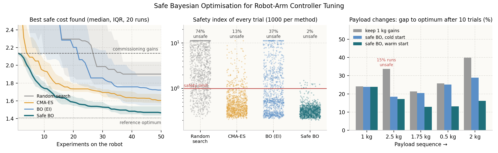
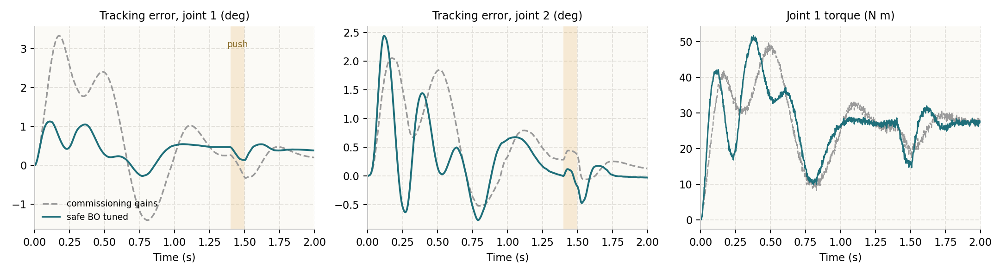
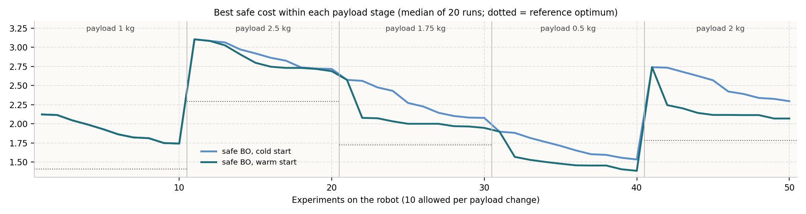

Servo gains on robot arms are still tuned by hand, and every new payload means doing it again. Letting an algorithm experiment on the machine is attractive, but a bad trial can make the arm oscillate violently or sag into a fixture. This case builds a Gaussian-process model of both performance and safety, and only ever tests gains that the model is confident are safe.

What the model does
A realistic test rig
A two-link arm in a vertical plane with a tip payload, joint friction, torque limits, a noisy 16-bit encoder and a one-sample control delay. Each trial releases the brake, performs a point-to-point move, holds, and absorbs an external push.
Performance and safety
Cost combines tracking error with torque ripple. A trial is unsafe if the error exceeds 8° or the torque ripple exceeds its limit, so both too-soft and too-aggressive gains are ruled out. Only 24% of random gain sets pass.
Safe Bayesian optimisation
Two Gaussian processes, written from scratch, model cost and safety. New gains are tried only if the safety upper confidence bound stays below the limit and they lie near gains already proven safe. Expected improvement picks among them.
Warm start after payload changes
Payload becomes an extra model input, so every earlier experiment informs the next tuning round. Gains the model predicts to be safe at the new payload serve as extra starting points.
Results
Four tuning strategies start from the same conservative commissioning gains at 1 kg and get 50 experiments each.
| Method | Unsafe trials | Gap to optimum after 15 trials | After 50 trials |
|---|---|---|---|
| Random search | 73.8% | 80.2% | 35.1% |
| Standard Bayesian optimisation | 36.8% | 81.1% | 22.3% |
| CMA-ES | 12.7% | 27.4% | 13.9% |
| Safe Bayesian optimisation | 1.8% | 16.6% | 4.1% |
Safe BO was both the safest and the fastest here. Its tuned gains halve the RMS tracking error of the commissioning gains, from 1.12° to 0.60°, with no extra torque ripple.

When the payload changes from 1 kg through 2.5, 1.75, 0.5 and 2 kg, keeping the old gains leaves the arm 21–40% from optimal and unsafe in 15% of runs at 2.5 kg. Re-tuning from scratch recovers some of that; re-using earlier experiments recovers most of it, reaching within 13–17% of the optimum in 10 trials.

Deliverables
- Python package with the arm model, PID controller, Gaussian process and five tuning strategies, each in its own module.
- Gaussian process implemented from first principles, checked against finite-difference gradients and scikit-learn.
- Unit tests for energy conservation, gravity torque and model correctness.
- Reproducible experiment scripts with raw traces and a summary for every figure.